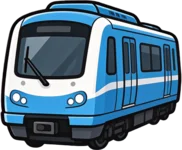
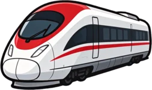
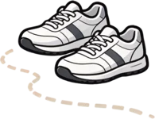
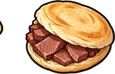
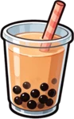
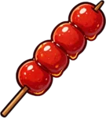

回家
五次换乘
早上 7:20，距高铁发车还有 35 分钟。
先挤上这班地铁，才赶得上回家的车。
河北室友
生存图鉴
生存图鉴

地铁苏州
高铁苏州北
步行村口玩法 三个通道来回躲人，别撞上赶路的乘客。
操作 点屏幕左/中/右变道；电脑用 ← ↑ → 或 1 2 3。
目标 撑过 30 秒，赶在车门关闭前冲进苏州北站。
管住嘴 路上全是吃的，吃一口加分，但会长胖、越跑越慢，吃撑了直接走不动；标着“抢来的”分更高。
路上能捡


